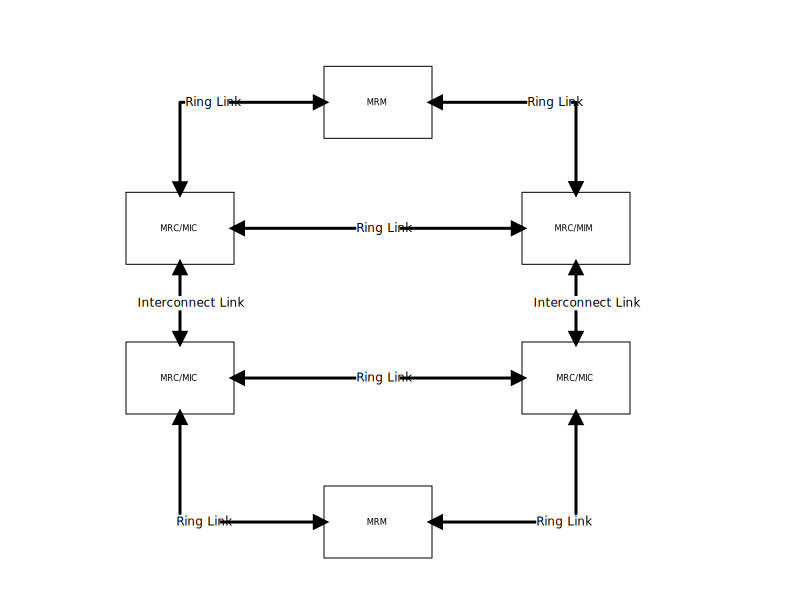

MRP functional description
MRP is Media Redundancy Protocol as described in IEC 62439-2.
The Microchip HW Engine supports the following roles: Media Redundancy Manager(MRM), Media Redundancy Client(MRC), Media Redundancy Auto-Manager(MRA), Media Redundancy Interconnection Manager(MIM) and Media Redundancy Interconnection Client(MIC). In a MRP ring, each node needs to support MRP and in a ring can be only one MRM and multiple MRC. It is possible to have multiple instances of MRP on a single node. But a port can be part of only one MRP instance. In an Interconnect MRP ring, there are only 4 nodes where one node is MIM and the other 3 nodes are MIC.
The MRM is responsible for detecting when there is a loop in the ring. It is sending the frame MRP_Test to detect the loops. It would send MRP_Test on both ports in the ring and if the frame is received at the other end, then the ring is closed. Meaning that there is a loop. In this case, it sets the port state to BLOCKED, not allowing traffic to pass through except MRP frames. In case it stops receiving MRP_Test frames from itself, then the MRM will detect that the ring is open, therefor it would notify the other nodes of this change and will set the state of the port to be FORWARDING.
The MRC is responsible for forwarding MRP_Test frames between the ring ports (and not to flood on other ports) and to listen when there is a change in the network to clear the FDB.
Similar with the MRP ring, in the interconnect ring, MIM sends MRP_InTest frames on all 3 ports and expects to receive at least on one port the MRP_InTest frames. The MIM can operate in a different mode where it sends CFM frames on the interconnect port.
The MIM is responsible for forwarding MRP_Test frames between ring ports and MRP_InTest frames between all ports.
The MIC is responsible for forwarding MRP_InTest frames on all ports.
1. Introduction
To be able to configure the switch, the following user space application is required: https://github.com/microchip-ung/mrp
The model of this application is a server that implements the MRP state machine which talks with the kernel via netlink interface and a client which talks only to the server to apply different configurations.
This is an example of topology. .MRP Topology 
2. Usage
2.1. Server
Before doing any configuration it is required to start the server which needs to run background because the user will use mrp application to talk with it.
mrp_server &
2.2. Bridge
After that is possible to create the bridge and assign the front ports to it
ip link set dev eth0 up ip link set dev eth1 up ip link set dev eth2 up ip link set dev eth3 up ip link add name br0 type bridge ip link set dev eth0 master br0 ip link set dev eth1 master br0 ip link set dev eth2 master br0 ip link set dev eth3 master br0
The bridge is not set up yet because that could cause loops in the network.
Once all MRP instances are created the bridge can be set up to forward also non MRP traffic.
ip link set dev br0 up
2.3. Client
2.3.1. Add MRM/MRC
Now we can create MRP instances using this command:
mrp addmrp bridge br0 ring_nr 1 pport eth0 sport eth1 ring_role mrm
Where:
-
bridgerepresents the bridge on which to create the MRP instance. -
ring_nrrepresents the ring id of which this MRP instance is part of. This id needs to be unique on each bridge. It is used to differentiate MRP instances. -
pportrepresents the primary port -
sportrepresents the secondary port -
ring_rolerepresents the role of the node. This can bemrm,mrc,mra,mim,mic
It is possible to create multiple MRP instances:
mrp addmrp bridge br0 ring_nr 2 pport eth2 sport eth3 ring_role mrm
Where:
-
ring_nrneeds to be unique -
pportandsportcan be part of an existing ring.
2.3.2. Get status
To see the current status of MRP instances it is possible to use this command:
mrp getmrp bridge: br0 ring_nr: 1 pport: eth0 sport: eth1 ring_role: MRM ring_state: CHK_RO bridge: br0 ring_nr: 2 pport: eth2 sport: eth3 ring_role: MRM ring_state: CHK_RC
Where:
-
bridgerepresents the bridge on which the MRP instance exists -
pportandsportrepresents the MRP ports of the instance -
ring_rolerepresents the role -
ring_staterepresents the state of the state machine. In this case first MRP instance is in open stateCHK_ROand the second is in closed stateCHK_RC.
2.3.3. Delete MRP
To delete an MRP instance:
mrp delmrp bridge br0 ring_nr 1
Where:
-
bridgerepresents the bridge on which MRP instance exists -
ring_nrrepresents the ring id of MRP instance
2.3.4. Add MIM/MIC
It possible for a node to have also the interconnect role. But this role can be set on only when the MRP instance is created. The interconnect mode has two modes of operating:
-
RC_MODE- where it is using MRP_InTest frames to detect if the ring is open/closed -
LC_MODE- where it is using CFM frames on the interconnect ports to detect if the links go down
By default MRP instance with interconnect role will use RC_MODE
mrp addmrp bridge br0 ring_nr 3 pport eth0 ssport eth1 ring_role mrc in_role mim in_id 1 iport eth3
Where:
-
in_rolerepresents the interconnect role. This can bemimormic. -
id_idrepresents the id of the interconnect node. This id needs to be the same wit the other nodes in the interconnect ring. -
iportrepresents the interconnect port.
To create MRP instance with interconnect role that use LC_MODE the following
command can be used:
mrp addmrp bridge br0 ring_nr 3 pport eth0 ssport eth1 ring_role mrc in_role mim in_id 1 iport eth3 in_mode lc cfm_instance 1 cfm_level 7 cfm_mepid 2 cfm_peer_mepid 1 cfm_dmac 00:00:00:00:00:02 cfm_maid ABCD
Where:
-
in_moderepresents the operation mode. This can belcorrc. -
cfm_instancerepresents the id of the cfm instance -
cfm_levelrepresents MEG level -
cfm_mepidrepresents the MEP id of the MEP -
cfm_peer_mepidrepresents the MRP id of the peer MEP -
cfm_dmacrepresents the MAC address of the MEP -
cfm_maidrepresents the MAID domain name
More information about CFM can be found here: https://github.com/microchip-ung/cfm